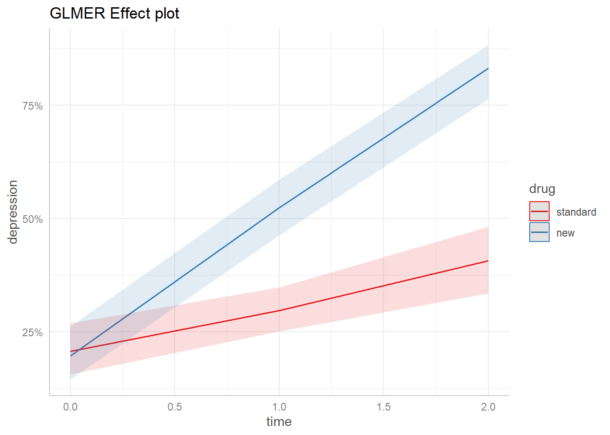
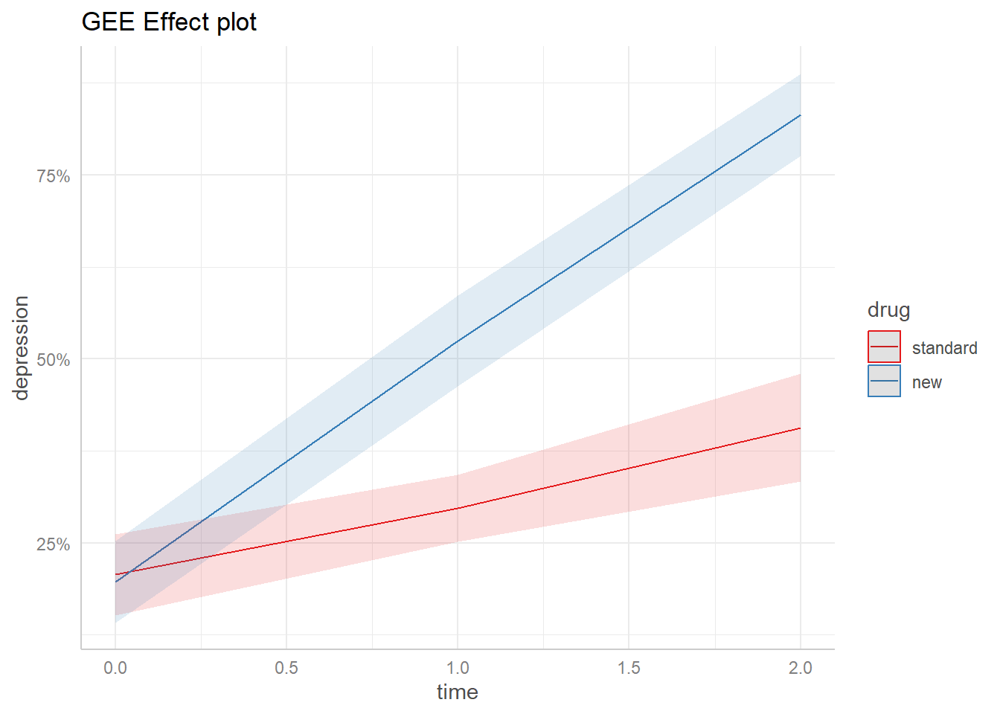

(Intercept) diagnosesevere drugnew time drugnew:time
-0.02798843 -1.31391092 -0.05960381 0.48241209 1.01744498
summary(dep_gee)
GEE: GENERALIZED LINEAR MODELS FOR DEPENDENT DATA
gee S-function, version 4.13 modified 98/01/27 (1998)
Model:
Link: Logit
Variance to Mean Relation: Binomial
Correlation Structure: Independent
Call:
gee(formula = depression ~ diagnose + drug * time, id = id, data = dat,
family = binomial, corstr = "independence")
Summary of Residuals:
Min 1Q Median 3Q Max
-0.94844242 -0.40683252 0.05155758 0.38830952 0.80242231
Coefficients:
Estimate Naive S.E. Naive z Robust S.E. Robust z
(Intercept) -0.02798843 0.1627083 -0.1720160 0.1741865 -0.1606808
diagnosesevere -1.31391092 0.1453432 -9.0400569 0.1459845 -9.0003423
drugnew -0.05960381 0.2205812 -0.2702126 0.2285385 -0.2608042
time 0.48241209 0.1139224 4.2345663 0.1199350 4.0222784
drugnew:time 1.01744498 0.1874132 5.4288855 0.1876938 5.4207709
Estimated Scale Parameter: 0.9854113
Number of Iterations: 1
Working Correlation
[,1] [,2] [,3]
[1,] 1 0 0
[2,] 0 1 0
[3,] 0 0 1
res <-glm(depression ~ diagnose + drug*time,data = dat,family = quasibinomial)summary(res)
Call:
glm(formula = depression ~ diagnose + drug * time, family = quasibinomial,
data = dat)
Coefficients:
Estimate Std. Error t value Pr(>|t|)
(Intercept) -0.02799 0.16271 -0.172 0.863
diagnosesevere -1.31391 0.14534 -9.040 < 2e-16 ***
drugnew -0.05960 0.22058 -0.270 0.787
time 0.48241 0.11392 4.235 2.50e-05 ***
drugnew:time 1.01744 0.18741 5.429 7.09e-08 ***
---
Signif. codes: 0 '***' 0.001 '**' 0.01 '*' 0.05 '.' 0.1 ' ' 1
(Dispersion parameter for quasibinomial family taken to be 0.9854187)
Null deviance: 1411.9 on 1019 degrees of freedom
Residual deviance: 1161.9 on 1015 degrees of freedom
AIC: NA
Number of Fisher Scoring iterations: 4
The “Estimated Scale Parameter” is reported as 0.9854113 = the dispersion parameter = similar to what is reported (Dispersion parameter for quasibinomial family taken to be 0.9854187) when running glm() with family = quasibinomial in order to model over-dispersion.
dep_gee2 <-gee(depression ~ diagnose + drug*time,data = dat, id = id, family = binomial,corstr ="exchangeable")
You are calculating adjusted predictions on the population-level (i.e.
`type = "fixed"`) for a *generalized* linear mixed model.
This may produce biased estimates due to Jensen's inequality. Consider
setting `bias_correction = TRUE` to correct for this bias.
See also the documentation of the `bias_correction` argument.

library(emmeans) # version 1.8.4-1
Warning: package 'emmeans' was built under R version 4.4.2
Welcome to emmeans.
Caution: You lose important information if you filter this package's results.
See '? untidy'
emm_out <-emmeans(dep_gee2, specs =c("time", "drug"), at =list(diagnose ="severe"), cov.keep ="time", regrid ="response") %>%as.data.frame()library(ggplot2) # version 3.4.1ggplot(emm_out) +aes(x = time, y = prob, color = drug, fill = drug) +geom_line() +geom_ribbon(aes(ymin = asymp.LCL, ymax = asymp.UCL, color =NULL), alpha =0.15) +scale_color_brewer(palette ="Set1") +scale_fill_brewer(palette ="Set1", guide =NULL) +scale_y_continuous(labels = scales::percent) +theme_ggeffects() +labs(title ="GEE Effect plot", y ="depression")

library(geepack) # version 1.3.9
Warning: package 'geepack' was built under R version 4.4.2